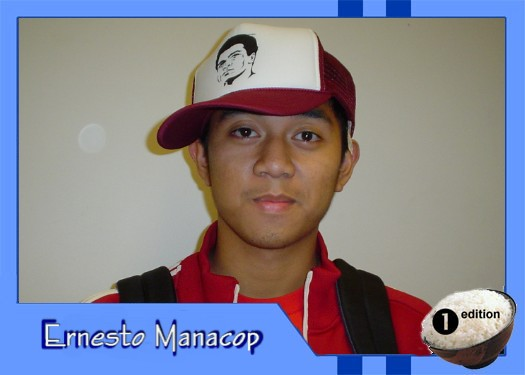

|
Why did you get involved with Theatre Rice? From knowing talented folks who were/are in TR. Ahem *Joyce, Brian, Reggie, Jericho* Ahem. And, I came to the first meeting this semester for the heck of it, liked it a lot because everyone was weird in their own cool ways,and deciding to audition, and VOILA... What do you hope to gain from TR? improve my skills as a big fat liar and be unrepressed for a few hours each week. Who are your role models? My role models are Jesus (even though I have never met him, I bet the Bible left out some juicy stories about him), my moms and my pops, my older sister, Rachel (beat the odds, Ate), my Kuya B.J., and the rest, here on Gilligan's Isle! What are your favorite films or t.v. shows? Since I am the biggest X-Men fan (I dare anyone to challenge me), I have a soft spot for X-Men 2 (lightyears beyond the first movie). Also, I like Dekada '70, Almost Famous, Rushmore, Beat Street, Antwone Fisher, and Truman Show. I like underdog movies. As for TV shows, I watch Alias, King of the Hill, Simpsons, Seinfeld, and Sex and the City. If you had a quote that defines how you live life, what would it be? "Be not afraid of moving slowly; be afraid only of standing still" (Chinese proverb) |